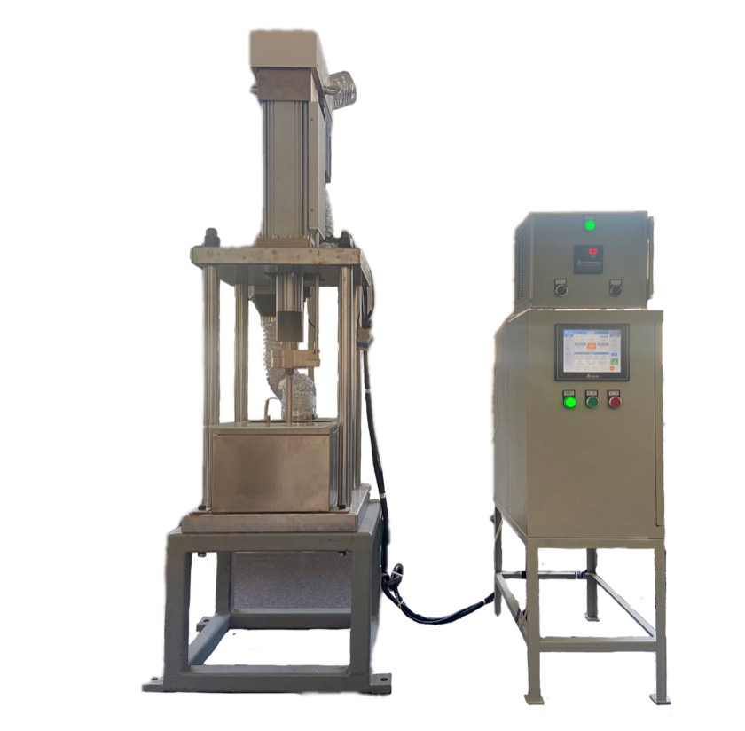
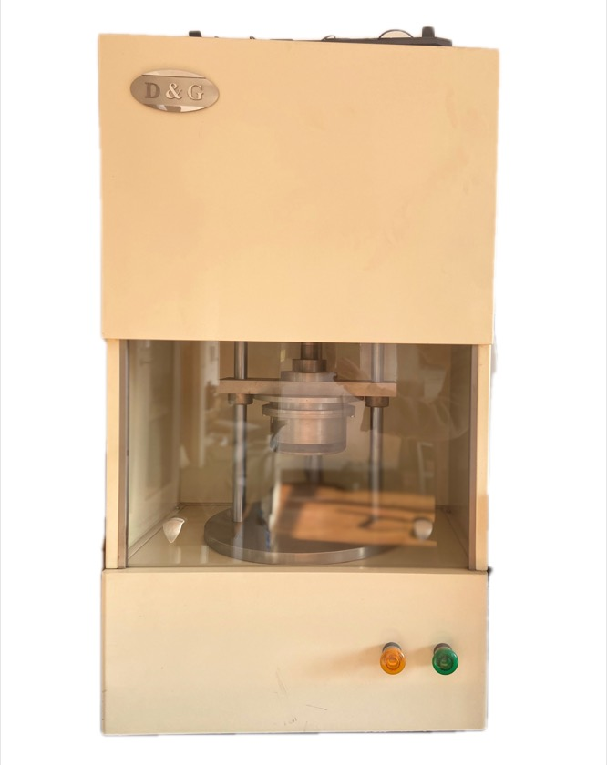
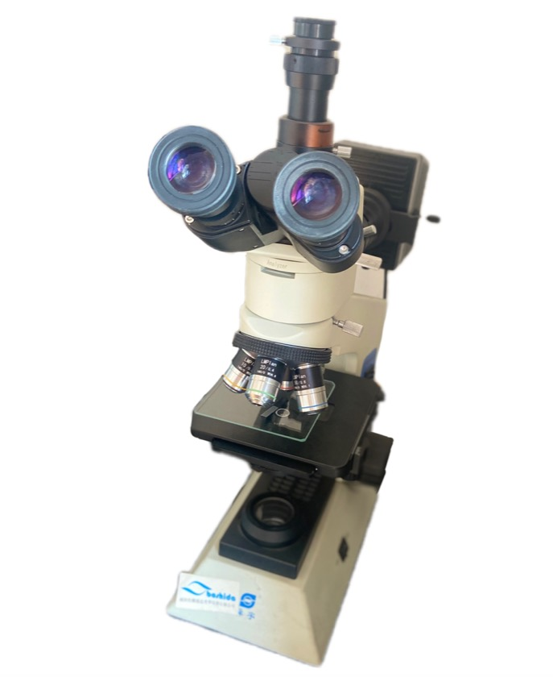
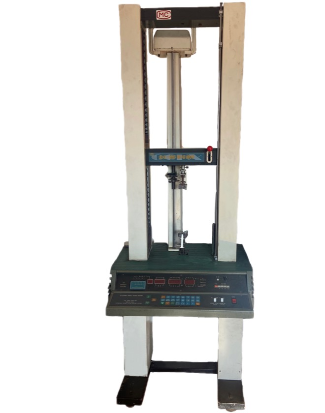
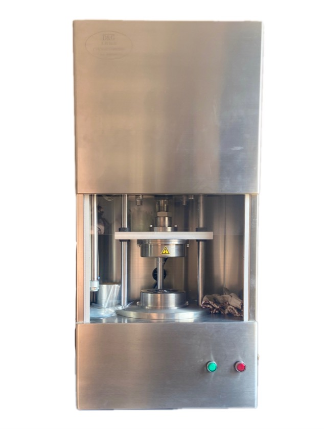

औद्योगिक रबर और फ्लोरोप्लास्टिक सीलिंग
प्रौद्योगिकी और गुणवत्ता
हर बैच के लिए गुणवत्ता प्रणाली और निरीक्षण रिकॉर्ड।
गुणवत्ता परीक्षण उपकरण 2

गुणवत्ता परीक्षण उपकरण 3

गुणवत्ता परीक्षण उपकरण 4

गुणवत्ता परीक्षण उपकरण 5
कंपनी प्रोफाइल
इलेक्ट्रोलाइजर सील और रबर-प्लास्टिक मिश्रित भागों पर ध्यान।
तकनीकी संस्कृति
ड्रॉइंग से स्थिर उत्पादन तक इंजीनियरिंग समर्थन।
प्रमाणन
हर बैच के लिए गुणवत्ता प्रणाली और निरीक्षण रिकॉर्ड।
सेवा नेटवर्क
अधिक मांग वाले उत्पादों के लिए बहु-स्थल आपूर्ति।
फ्लोरोप्लास्टिक उत्पाद
फ्लोरोप्लास्टिक उत्पाद प्रोसेसिंग तकनीक
PTFE, PFA, FEP/F46 और PVDF सीलिंग उत्पादों के लिए मोल्डिंग, रोलिंग, इंजेक्शन, लाइनिंग और फिनिशिंग तक तकनीकी नोट्स।फ्लोरोप्लास्टिक कम्प्रेशन मोल्डिंग
फ्लोरोप्लास्टिक कम्प्रेशन मोल्डिंग से प्लेट, रॉड, स्लीव, टेप, सीलिंग रिंग, डायफ्राम और धातु इन्सर्ट वाले भाग बनाए जा सकते हैं। प्रक्रिया में प्रीफॉर्मिंग, सिंटरिंग और कूलिंग शामिल हैं। PTFE पाउडर को मोल्ड में समान रूप से भरकर कमरे के तापमान पर घने ब्लैंक में दबाया जाता है, फिर उसे गलनांक से ऊपर गर्म करके वापस कमरे के तापमान तक ठंडा किया जाता है। कुछ फ्लोरोप्लास्टिक गरम मोल्ड में गलनांक से ऊपर दबाए जाते हैं, जबकि PTFE सामान्यतः ठंडे मोल्ड में बनता है। PTFE के लिए कम्प्रेशन अनुपात 4-6, सिकुड़न 2.6-4.5%, पाउडर 20-500 माइक्रोन, दबाव 17-35 MPa, हवा निकालना आवश्यक और 100 mm ब्लैंक के लिए लगभग 15 मिनट होल्डिंग रखी जाती है।
सिंटरिंग और कूलिंग
सिंटरिंग में ताप बढ़ाने की गति नियंत्रित रहती है, सामान्यतः 20-120°C प्रति घंटा। बड़ा उत्पाद हो तो गति धीमी रखी जाती है। सस्पेंशन रेजिन 370-380°C और डिस्पर्शन रेजिन 360-370°C पर सिंटर किया जाता है। अधिक तापमान से सिकुड़न और छिद्रता बढ़ती है, इसलिए समय नियंत्रित करना जरूरी है। कूलिंग सामान्यतः 15-25°C प्रति घंटा धीमी होती है। तेज कूलिंग केवल 5 mm से पतली शीट या पतली दीवार वाली रैम-एक्सट्रूडेड ट्यूब के लिए होती है। कुछ उत्पादों को 100-120°C पर 4-6 घंटे एनील किया जाता है।
फ्लोरोप्लास्टिक रोलिंग
PTFE डायफ्राम रोलिंग से बनते हैं। रोलिंग एकदिश और बहुदिश हो सकती है। रोलिंग के बाद सफेद अपारदर्शी शीट अर्धपारदर्शी क्रिस्टल जैसी हो जाती है। एकदिश रोलिंग में दो समान घूमते रोलरों से दोबारा गर्म की गई पारदर्शी शीट तेजी से गुजारी जाती है। अनुपात 1.5-2.5 और गति लगभग 20 rpm रहती है। बहुदिश रोलिंग में सिंटर और क्वेंच की हुई शीट को कई दिशाओं में रोल करके मोटाई धीरे-धीरे घटाई जाती है। अनुपात 2-2.5, रोल तापमान 150-200°C और भाप दबाव 0.5-0.9 MPa होता है।
PFA इंजेक्शन मोल्डिंग
PFA टेट्राफ्लुओरोएथिलीन और परफ्लुओरोअल्काइल विनाइल ईथर का सह-बहुलक है, जो पिघलकर संसाधित होने वाला PTFE प्रकार है और इंजेक्शन मोल्डिंग के लिए उपयुक्त है। प्रसंस्करण तापमान 425°C तक जा सकता है और विघटन 450°C से ऊपर होता है, इसलिए सामान्य नियंत्रण 330-410°C पर होता है। नमी अवशोषण लगभग 0.03% है, इसलिए सुखाना सामान्यतः जरूरी नहीं। इन्सर्ट लगभग 140°C तक पहले गर्म किए जाते हैं। बैरल तापमान 200-210°C, 300-310°C और 350-410°C, नोजल थोड़ा कम, मोल्ड 140-230°C, इंजेक्शन दबाव 40-90 MPa, गति मध्यम, होल्डिंग छोटी और ठंडा करना 40-150 सेकंड होता है।
द्वितीयक प्रसंस्करण
फ्लोरोप्लास्टिक की प्रकृति के कारण कुछ उत्पाद एक बार में तैयार नहीं होते और द्वितीयक प्रसंस्करण चाहिए। इसमें काटना, वेल्डिंग, अंदरूनी अस्तर और फैलाव शामिल हैं। काटना धातु मशीनिंग जैसा होता है और लेथ, ड्रिल तथा प्लेनर का उपयोग करता है; ब्लैंक को काटने से पहले 24 घंटे रखना चाहिए। वेल्डिंग गरम-प्रेस और गरम-वायु रॉड से होती है। गरम-प्रेस वेल्डिंग में विशेष फिक्स्चर, 327°C से अधिक ताप और दबाव चाहिए। गरम-वायु रॉड वेल्डिंग PFA रॉड से होती है। PTFE और FEP अस्तर लौह धातु पाइपों को जंग से बचाते हैं।
फैलाव, अस्तर और सामग्री
फैलाव से नालीदार ट्यूब, ताप-संकुचन ट्यूब और ताप-संकुचन फिल्म बनती है। F46 ताप-संकुचन ट्यूब के लिए जल-शीतित वैक्यूम आकार-निर्धारण उपयोग हो सकता है; खिंचाव अनुपात 3-7, पिघला शंकु 10-20 mm, मोल्ड 80-160°C, दबाव 0.1-0.2 MPa और लाइन गति 80-500 mm/min। उदाहरणों में PTFE मशीन-गाइड नरम टेप, PTFE के पॉलीस्टाइरीन, पॉलीइमाइड या पॉली-पी-हाइड्रॉक्सीबेंजोएट मिश्रण, ग्रेफाइट, मोलिब्डेनम डाइसल्फाइड और कांस्य पाउडर भराव, कांच-फाइबर प्रबलित PTFE पाइप अस्तर, PVDF सीलिंग रिंग, फ्लोरीनयुक्त एपॉक्सी रेजिन, परफ्लुओरोइलास्टोमर, ऊष्माप्लास्टिक फ्लोरीन रबर, परफ्लुओरोपॉलीईथर ग्रीस और स्नेहक, ऊष्मा स्थिरकारक व सहायक पदार्थों के साथ विलायक-रहित PVF प्रसंस्करण शामिल हैं।